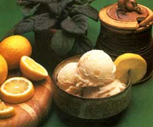

This summer, fill your ice cream cone with a tasty, nutritious, and low-calorie alternative.
Frozen yogurt ... the tangy treat that was practically unheard of only a few years ago is now a summertime staple in many American kitchens. It's easy to see why: Not only does the iced confection taste great, but it's chock-full of protein, calcium, and healthful lactobacillus bacteria. What's more, a serving of frozen yogurt contains only half the calories present in an equal portion of ice cream.
With that many nutritional pluses, it's not surprising that frozen yogurt has achieved such phenomenal popularity in so short a time. There's hardly a town that doesn't boast a soft-serve" outlet ... and the product is also available in hard-frozen form at most supermarkets. You haven't really tasted frozen yogurt at its best, though, until you've enjoyed some that you made yourself.
Homemade frozen yogurt is even easier to prepare than ice cream ... it can be produced for a third the cost of the store-bought brands ... and it lacks the stabilizers, emulsifiers, preservatives, antioxidants, and "imitation" ingredients that inevitably find their way into the commercial concoctions. (In fact, you might be surprised to know that many of the frozen yogurt products on the market contain "dead" rather than viable bacteria, thus reducing the health benefits of the dessert. And because regulations for frozen yogurt have not been standardized, even the amount of yogurt present in commercial brands varies considerably.) And by making your own yogurt to start with (see the accompanying sidebar), you'll be able to regulate what goes into your dessert from the cow-or goat-onward. Best of all, you'll be able to prepare any flavor of frozen yogurt that you've a hankering for, instead of limiting your taste buds to a few varieties in your grocer's freezer.
The following recipes are some of our favorites. In most cases, whole milk yogurt is specified because it imparts a richer, smoother taste and texture to the dessert than does low fat yogurt. But you can use low-fat or even nonfat yogurt if you prefer ... though you'll probably need to add a thickener, such as gelatin or beaten egg whites, to give the yogurt the proper consistency. Also, because tartness is part of the charm of frozen yogurt, these recipes call for a minimal amount of sweetener ... and whenever possible, natural sweeteners-such as fruit juices-are employed. Each of the recipes makes about a quart of frozen yogurt unless otherwise noted.
After sampling a few of these concoctions, you'll probably want to expand your gastronomic horizons and come up with your own taste designed favorites. Whatever variations you devise, however, we think you'll agree that homemade frozen yogurt makes for simply scrumptious summertime fare.
FRENCH VANILLA
FROZEN YOGURT
1/2 cup of evaporated milk
2 teaspoons of unflavored gelatin, softened
2/3 cup of raw sugar
pinch of salt
2 egg yolks, beaten
2 cups of plain, whole milk yogurt
2 tablespoons of vanilla
2 egg whites
Heat the milk to just below boiling in the top of a double boiler. Next, add the gelatin, sugar, and salt, and stir these ingredients until they're dissolved.
Now, beat the egg yolks until they're frothy, and blend in a small amount of the milk mixture. Then gradually add the yolks to the ingredients in the double boiler, stirring constantly as you do so. Continue cooking and blending the liquid until it begins to thicken, then set it aside. When it's cooled to room temperature, add the yogurt and vanilla, and chill the mixture for 1 hour in a refrigerator.
Finally, beat the egg whites until they form soft peaks, gently fold them into the chilled yogurt blend, and chum the mixture in a standard (manual or electric) two-quart ice cream freezer. This recipe makes a smooth, frosty dessert with a subtle undercurrent of vanilla.
Variation: If a simpler or sugarless vanilla yogurt is what you're after, just combine 2 cups of plain, whole milk yogurt, 1/2 cup of honey, 1 cup of evaporated milk, and 2 tablespoons of vanilla ... chill the preparation for 2 hours . . . and churn it. It'll take only 5 minutes to make this mix, and a few hours-and turns of the freezer crank-later, you can reward yourself with a cool, delicious treat.
RASPBERRY FROZEN YOGURT
1 cup of fresh raspberry puree
2 cups of plain, whole milk yogurt
1/3 cup of honey
This is another 5-minutes-to-mix favorite. Buzz up some raspberries in a blender, add the yogurt and honey, chill the mixture for 2 hours, churn it, and enjoy! You can also modify this recipe to prepare blueberry, blackberry, strawberry, or even banana frozen yogurt.
CAROB FROZEN YOGURT
1/2 cup of carob powder
1/2 cup of water
1/4 cup of corn syrup
1/4 cup of honey
1 teaspoon of vanilla
2-1/2 cups of plain, whole milk yogurt
The natural-foods revolution has brought with it some winning new flavors, among them carob. Try this recipe for a dessert that'll be sure to satisfy your sweet tooth.
Mix the carob powder and the water in a heavy enameled or stainless steel saucepan. Then add the remaining ingredients except the yogurt, and heat the mixture-stirring it constantly-for 3 minutes. Remove it from the heat, and when the carob concoction has cooled to room temperature, add the yogurt. You'll now need to chill the dessert-to-be for 2 hours ... and then churn it in a two-quart freezer.
FRESH PEACH
FROZEN YOGURT
1/3 cup of fresh peaches, peeled and chopped
2-1/2 cups of plain, whole milk yogurt
1/2 cup of raw sugar
1 teaspoon of vanilla
Combine all the ingredients, chill them for 2 hours, and then churn the confection. Light, fresh, and creamy, this frozen yogurt is bound to be one of your favorites.
HONEY-LEMON
FROZEN YOGURT
2/3 cup of honey
2 tablespoons of lemon juice
1 teaspoon of grated lemon rind
pinch of salt
2 cups of plain, whole milk yogurt
2 egg whites
Honey and lemon go together beautifully in frozen yogurt. The honey gives the dessert a smooth texture and natural sweetness, while the lemon imparts a bright snap to the taste. To make this delightful delicacy, combine the first four ingredients in a heavy enameled or stainless steel saucepan over medium heat and stir them until they're well blended. Then set the mixture aside to cool.
Next, mix in the yogurt and chill the concoction for 2 hours. Then beat the egg whites until stiff peaks form, gently fold them into the yogurt preparation, and churn the dessert in a two-quart freezer.
DESERT OASIS
FROZEN YOGURT
1/3 cup of minced dates
2/3 cup of honey
1/3 cup of evaporated milk
1 tablespoon of unflavored gelatin, softened
2 cups of plain, whole milk yogurt
Begin by mixing the dates and honey together. Next, heat the milk in the top of a double boiler, add the softened gelatin and the date-honey combination, and stir the blend constantly until it's smooth. Then remove the ingredients from the heat, and when they're cooled to room temperature, add the yogurt. Finally, chill the mixture for 1 hour and then churn it.
COFFEE FROZEN YOGURT
2 cups of milk
1-1/2 cups of raw sugar
2 eggs, beaten
1 cup of cold, very strong black coffee
1/4 teaspoon of salt
1- 1/2 cups of plain, whole milk yogurt
1 teaspoon of vanilla
2 tablespoons of Grand Marnier or coffee-flavored liqueur, such as Kahlua
In an enameled or stainless steel saucepan, cook the milk over low heat, but don't allow it to boil. Then remove the pan from the burner and add the sugar, stirring until it dissolves. Now, gradually pour the milk mixture over the beaten eggs, stirring constantly until the ingredients are well blended. Next, transfer the mixture to the top of a double boiler and cook it, stirring all the while, until it's thick and smooth. Cool the concoction to room temperature, then add the remaining ingredients and mix them thoroughly. Chill the dessert-to-be for 2 hours, and then churn it in a two-quart freezer. This recipe makes 1-1/2 quarts.
EDITOR'S NOTE: All ofthe recipes in this article except the Coffee Frozen Yogurt are reprinted with permission from Cool & Creamy by Gay Hendricks and Carol Leaven worth (copyright© 1979 Prentice-Hall, Inc., Rt. 9W,Englewood Cliffs, NJ 07632), which is currently out of print but may be available from your local library.
The Coffee Frozen Yogurt recipe is reprinted with permission from The Book of Yogurtby Sonia Uvezian (published by 101 Productions, 834 Mission St., San Francisco, CA 94103), which is available for $6.95 plus $1.50 for postage.
The best frozen yogurt begins with homemade yogurt, though of course you can buy the converted milk product. But since homemade yogurt is so easy to prepare (and significantly less costly than the commercial brands), you'll probably want to create your own. That way, you can be sure that the yogurt is fresh and contains only the natural ingredients you put in it. You'll also be able to select the type of milk you prefer and to control the incubation period to produce the distinctive taste and texture you're after.
FOUR SIMPLE STEPS
Although there are all sorts of fancy yogurt-makers on the market today, you can make a perfectly good batch of the Middle Eastern food by using common kitchen tools. You'll need a good-sized stainless steel or enamel pot, a candy thermometer, glass jars with lids (jelly jars are a good choice), and an incubation chamber (more about that last item later).
Once you've rounded up this equipment, follow the steps listed below. The amounts given will make 1 quart of yogurt; to concoct more, increase the quantities accordingly.
[1] Preheating. In a large pot, heat I quart of milk to 140°-150°F for 15 minutes, stirring it frequently to prevent a skin from forming on the surface. (You can also add 1/3 cup of nonfat dry milk powder at this point if you desire a thicker and more nutritious yogurt.)
[2] Inoculation. Remove the pan from the heat and allow the milk to cool to 110'deg-20degF (112'F is ideal). Then, in a small bowl, mix a bit of the milk with 1 to 2 tablespoons of fresh yogurt (or 1 package of dry culture) and blend it well. Next, add that mixture to the lukewarm milk, stir it thoroughly, and pour the inoculated liquid into clean jars.
[3] Incubation. You'll now need to incubate the sealed jars at 110°-120°F for 3 to 6 hours (or longer for a tangier yogurt). There are numerous setups manufactured for this purpose, ranging from hay- or featherlined boxes to electric incubators, but most folks choose a simpler and less costly route, such as setting the jars in warm water in a sealed pressure canner or placing them in a warm oven just be sure to keep the temperature within the required range, as the bacteria are inactive below 90'F and will be killed at temperatures above 120°F
[4] Refrigeration. When the coagulated liquid has set up to your liking, refrigerate the jars ... and spoon up a serving of your own creamy yogurt!
|
 |
|
|